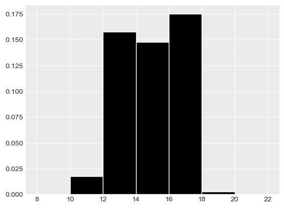

← return to practice.dsc10.com
This quiz was administered in-person. It was closed-book and
closed-note; students were not allowed to use the DSC
10 Reference Sheet. Students had 20 minutes to work on
the quiz.
This quiz covered Lectures 5-7 of the Winter 2024 offering
of DSC 10.
⚠️ PDF version available here .
The laptops DataFrame contains information on various
factors that influence the pricing of laptops. Each row represents a
laptop, and the columns are:
"Mfr" (str): the company that manufactures the laptop,
like “Apple” or “Dell”."Model" (str): the model name of the laptop, such as
“MacBook Pro”."OS" (str): the operating system, such as “macOS” or
“Windows 11”."Screen Size" (float): the diagonal length of the
screen, in inches."Price" (float): the price of the laptop, in
dollars.We’d like to visualize the distribution of the "Mfr"
column in the laptops DataFrame. Fill in the blanks so that
the code below draws an appropriate plot.
laptops.groupby(__(a)__).__(b)__.get([__(c)__]).plot(kind=__(d)__)Answer:
Answer (a): "Mfr"
We want to see how laptops are distributed across manufacturers, so
we group by the "Mfr" column.
The average score on this problem was 92%.
Answer (b): count()
.count() counts the number of rows in each group.
Grouping by "Mfr" and then counting tells us how many
laptops come from each manufacturer, which is exactly the distribution
we want to plot.
The average score on this problem was 82%.
Answer (c): "Model", "OS",
"Screen Size", or "Price"
After laptops.groupby("Mfr"), the "Mfr"
column becomes the index rather than a regular column. So
.count() returns a DataFrame with one row per manufacturer,
where every remaining column holds the same count (the number of laptops
from that manufacturer). Since all of these columns contain identical
values, we can pick any one of them with
.get([...]) — just not "Mfr" itself, since
it’s no longer a column.
The average score on this problem was 56%.
Answer (d): "bar" or
"barh"
"Mfr" is a categorical variable (manufacturer names),
and the standard way to visualize the distribution of a categorical
variable is a bar chart, with one bar per category.
The average score on this problem was 68%.
Fill in the blanks so that rotten_apple evaluates to the
number of laptops manufactured by "Apple" that are priced
below the median price of all laptops.
x = __(a)__
y = __(b)__
rotten_apple = laptops[x __(c)__ y].__(d)__Note: (a) and (b) are interchangeable
Answer (a):
laptops.get("Mfr") == "Apple"
This is a Boolean Series that is True for rows where the
manufacturer is "Apple" and False
otherwise.
The average score on this problem was 71%.
Answer (b):
laptops.get("Price") < laptops.get("Price").median()
This is a Boolean Series that is True for rows priced
below the median. Note the median here is computed over
all laptops in laptops, not just Apple
ones — rotten_apple should count Apple laptops priced below
the overall median price, not the median of Apple laptops alone.
The average score on this problem was 71%.
Answer (c): &
We want rows that satisfy both conditions
x and y at once. Since x and
y are Boolean Series (not single
True/False values), we combine them
element-wise with &, not the Python keyword
and, which only works on single Booleans.
The average score on this problem was 43%.
Answer (d): shape[0]
laptops[x & y] is the DataFrame of rows matching
both conditions. .shape gives
(number of rows, number of columns), so
.shape[0] pulls out the number of rows — the count of
matching laptops we want.
The average score on this problem was 43%.
Select all the true statements below.
When you set the index of a DataFrame, the specified column becomes the index, and the old index becomes a column.
After grouping a DataFrame, the resulting number of rows is less than or equal to the original number of rows.
The area of a density histogram is always equal to 1.
A scatter plot has one numerical axis and one categorical axis.
The height of the tallest bar in a density histogram is always less than 1.
Answer: Option 2 and Option 3
Option 1: False. When you call
.set_index(), the specified column becomes the new index,
but the old index is simply dropped — it does not get
kept around as a column. If you want to preserve the old index as a
column, you’d need to call .reset_index() first.
Option 2: True. Grouping combines all rows that share the same value in the group-by column into a single row. So the number of rows after grouping (the number of distinct groups) can never be more than the number of rows you started with.
Option 3: True. A density histogram is scaled so that the total area under all of its bars always equals 1 — that’s what makes it a valid probability density.
Option 4: False. A scatter plot shows the relationship between two numerical variables, with a numerical axis on both the x- and y-axis. A plot with one numerical and one categorical axis would instead be something like a bar chart.
Option 5: False. The height of a bar in a density
histogram is area / width. If a bin is narrower than 1 unit
wide, its height can be greater than 1 even though its area is still at
most 1. So bars can, and sometimes do, rise above a height of 1.
The average score on this problem was 84%.
A density histogram of "Screen Size" is shown below.

What percentage of computer models have a
"Screen Size" of at least 16 inches but less than 18
inches? Give your answer as an integer rounded to the nearest
multiple of 5.
Answer: 35%
In a density histogram, the percentage of data in a bin is given by that bar’s area, since
\text{area} = \text{width} \times \text{height}.
The bin from 16 to 18 inches has a width of 2 and a height of about 0.17. So its area is
2 \times 0.17 = 0.34 = 34\%.
Rounded to the nearest multiple of 5, that’s 35% of laptop models with a screen size of at least 16 inches but less than 18 inches.
The average score on this problem was 72%.
Using groupby, write an expression that
evaluates to the average price of laptops with the "macOS"
operating system.
Answer:
laptops.get(["OS", "Price"]).groupby("OS").mean().get("Price").loc["macOS"]
We first select only the "OS" and "Price"
columns with .get([...]). This avoids errors from trying to
average non-numeric columns like "Model", and keeps only
the column we’re grouping by and the one we want to average.
.groupby("OS").mean() then gives one row per operating
system, with the average price in each column.
.get("Price") pulls out that column as a Series indexed by
"OS", and .loc["macOS"] looks up the value for
"macOS" specifically.
The average score on this problem was 72%.
Without using groupby, write an
expression that evaluates to the average price of laptops with the
"macOS" operating system (the same quantity as above).
Answer:
laptops[laptops.get("OS") == "macOS"].get("Price").mean()
laptops.get("OS") == "macOS" is a Boolean Series that is
True for macOS laptops. Using it to query
laptops keeps only those rows. From there,
.get("Price") selects the "Price" column, and
.mean() computes its average — the average price of macOS
laptops, without ever grouping.
The average score on this problem was 71%.